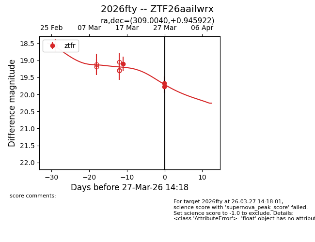
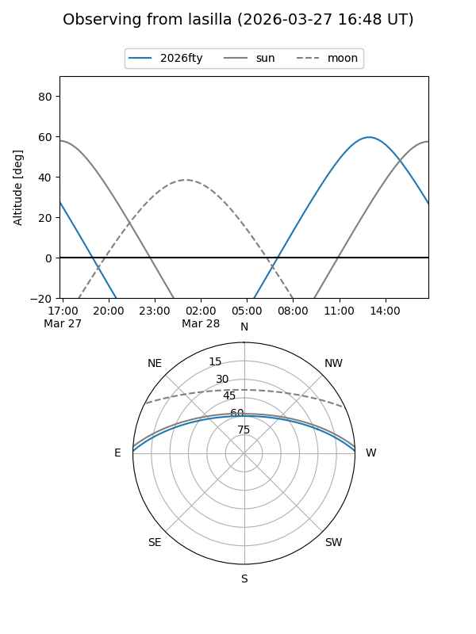
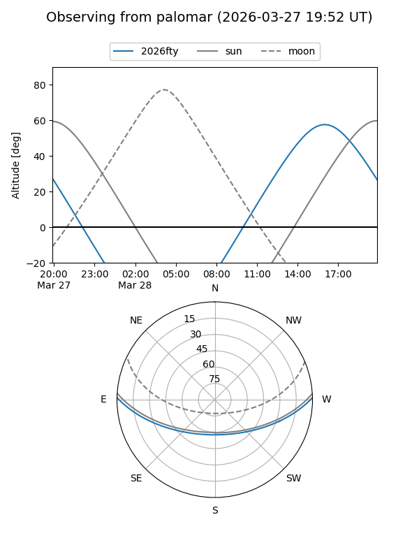
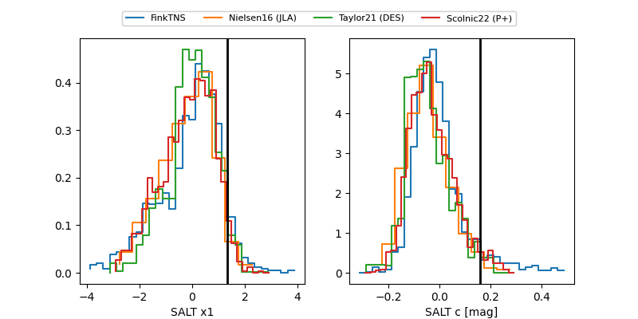

2026fty
Target 2026fty at 2026-03-27 14:20
Aliases and brokers:
FINK: link
Lasair: link
ALeRCE: link
TNS: link
YSE: link
alt names
ZTF26aailwrx (ztf,fink_ztf)
2026fty (tns,yse)
Coordinates:
equatorial (ra, dec) = 309.0040,+0.94592
equatorial (HMS+DMS) = 20:36:00.95,+00:56:45.32
galactic (l, b) = (46.4381,-22.61766)
Flags:
Photometry:
last ztfr=19.77
4 ztfr detections
Lightcurve

Visibility


Additional plots
